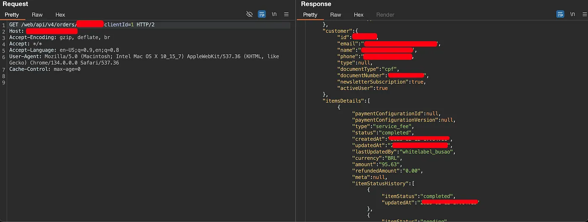
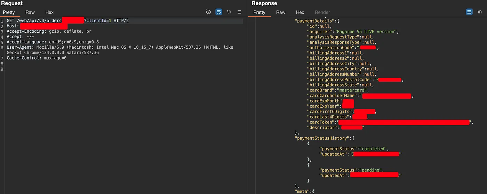
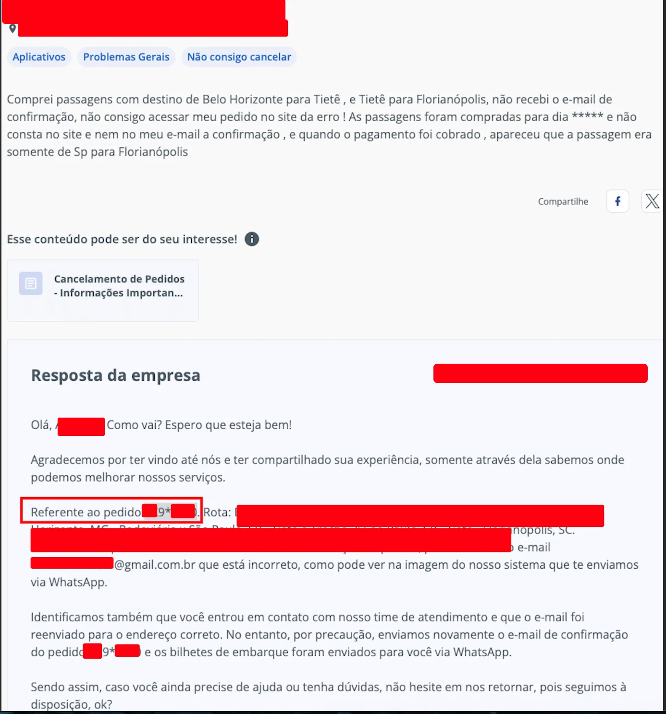
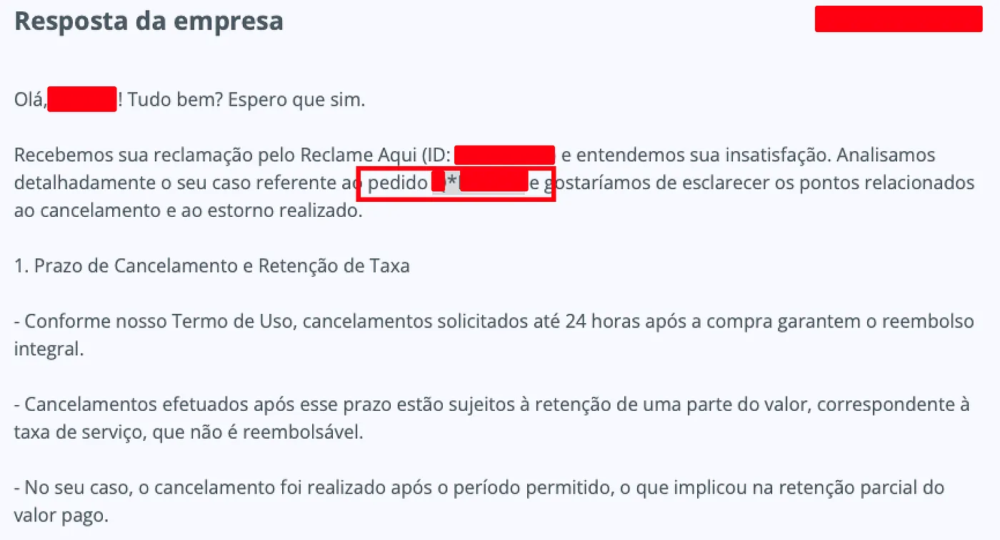

Quando a curiosidade chama…
Tudo o que eu queria era uma viagem… mas acabei encontrando uma vulnerabilidade.
Sou apaixonado por viajar — então decidi tirar um tempo longe das telas. Comprei uma passagem, fechei o notebook e fui descansar.
Mas no meio da noite, aquela curiosidade que só quem trabalha com segurança conhece bateu forte:
“Como será que estão tratando os dados dos usuários?”
Bastou uma análise simples, sem técnicas avançadas: **nenhuma autenticação e dados sensíveis sendo expostos livremente pela API.**
- Nenhuma autenticação exigida
- Apenas um código revelava dados pessoais
- Possível consulta automatizada em massa
A própria empresa afirma que já emitiu 60+ milhões de bilhetes. Ou seja: **milhões de pessoas tiveram suas PII expostas**, como:
- Nome completo
- CPF
- Telefone
- Endereço
- Data de nascimento
- Dados do cartão (nome, validade, BIN + últimos 4)
API1:2023 — Broken Object Level Authorization
A API permite acesso direto a objetos sensíveis através de seus IDs — **sem validar se o usuário tem direito ao recurso**.
GET /web/api/v4/orders/PEDIDO/?clientid=1

Além da violação técnica, configura **descumprimento da LGPD**, pois permite acesso não autorizado a dados pessoais e financeiros.
API4:2023 — Unrestricted Resource Consumption
Os códigos de pedidos possuem apenas **8 caracteres alfanuméricos**. Isso os torna **enumeráveis e sujeitos a força bruta lenta**, facilmente automatizável.
A empresa ainda **mascara apenas 1 dígito** quando mostra pedidos no Reclame Aqui.

Para descobrir o dígito oculto → **apenas 36 tentativas** (0–9 + A–Z).

Resultado: Um atacante poderia **enumerar milhões de pedidos**, com poucos recursos.
OSINT como vetor auxiliar
GET /app/api/v4/orders/?email=example@example.com&page=1&size=10&clientId=IDAo fornecer um e-mail válido, o atacante consegue verificar se a pessoa viajou, origem, destino, datas… **Privacidade zero.**
Autenticação não basta — autorização é essencial
Autenticar é trancar a porta. Autorizar é verificar quem pode entrar.
Sem isso:
- Dados nas mãos erradas
- Enumeração massiva
- Riscos legais e financeiros
Boas práticas para APIs sensíveis
- Autenticação obrigatória
- Autorização contextual (O usuário é dono do dado?)
- Rate limiting com bloqueio real
- Logs + alertas de anomalias
Linha do Tempo do Report
- 02/04 — Report inicial enviado
- 07/04 — Contato com AppSec da empresa
- 09/04 — Nenhuma resposta…
- 11/04 — Empresa corrigiu e agradeceu
Keep Hacking! 🏴☠️